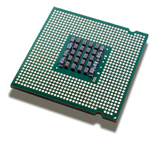

 What is MacCPUID
MacCPUID is a developer tool used for displaying information collected from the microprocessor via the CPUID instruction. The CPUID instruction returns information in the general purpose registers such as manufacturer identification, a processor's family, model, and stepping numbers, supported features (e.g. SSE, SSE2), cache information, and many others.
For more information regarding the CPUID instruction, please reference the "IA-32 Intel® Architecture Software Developer’s Manual Volume 2A: Instruction Set Reference, A-M" (order number 253666) which can be downloaded from developer.intel.com.